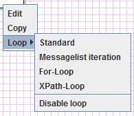
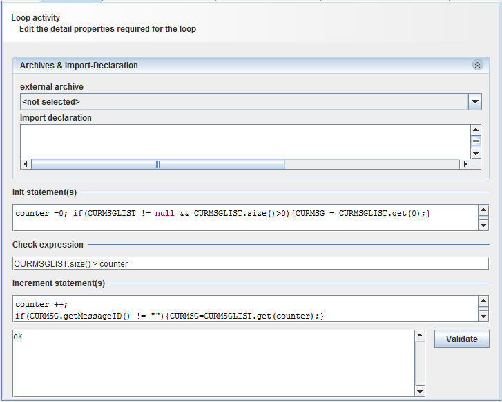
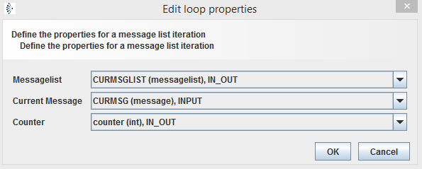
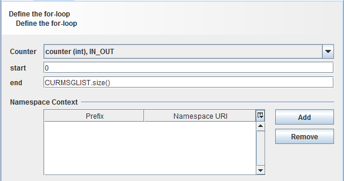
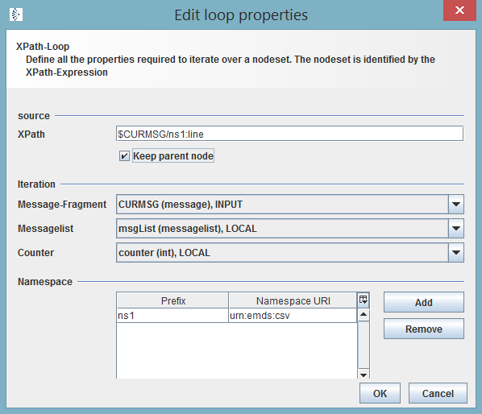

Loop

Topic content
Description
A loop makes it possible to do certain activities multiple times.
Purpose of object
Common functionality for working with lists.
Create
Loops can be created by right click on the activity and putting the mouse on the section Loop. "Disable loop" deletes the loop configuration.

Configure
After creation an additional tab will appear in configure window of the activity. A loop is commonly just sensible if you have a kind of list, e.g. messagelist. Additionally a counter is often needed. Please make sure you declared these two variables in properties of process model.
The following kind of loops are possible:
Standard
The standard iteration implements its own logic. The activity needn't be connected to a channel.

The standard loop statements are written in programming language. To declare some libraries and classes to use, open the drop-down selection . For usage of other Orchestra and java classes you can add a of type Standard Java Archive. To import the necessary classes please declare your import statements in field.
As you can see in the example above do you have to fulfill three text fields with the necessary code:
o: Code, which has to be done before starting the iterations. E.g. reset counter, ensure Objects are given.
o: This statement must return a Boolean value. If it is true the loop is doing one more iteration otherwise it will stop.
o:The body of a iteration. This is the logic of each iteration. E.g. in case of a list iteration the statements, which have to be done with each list record. If you use a counter don't forget the increment of it.
If you are done with your statements click validate to improve, whether your code is correct. If some errors appeared the field at the bottom will give some error statements.
Click to close the dialog.
Message iteration
This loop iterates through a list of Orchestra messages. The messages get successive sent to the connected channel.

To do this iteration three objects are necessary:
o: The list, which should be passed. Every element of the list is sent to the channel.
o: The "workspace" message, which contains the actual list record.
o: The counter to iterate through messagelist.
For-Loop
The for-loop is equal to programming a for loop. You're iterating the activity by using a counter variable, to define the number of iterations.

To execute the loop the following values are necessary:
o: A counter variable to use for the iteration.
o: the beginning value of counter. In most cases 0, but can also be an integer value.
o: The end criteria. Can be a value or a variable from process. In example above it is the length of messagelist.
To add these values you can use every process variable. To see a selection do right click on the input field.
You are also able to add a XPath expression by using the XPath Editor. Therefore the pane could be necessary.
XPath-Loop
A XPath loop enables an iteration over the elements of a list. Therefore a Xpath statement is necessary, to define the elements to be processed.

To execute the following values are needed:
: The expression to extract the elements to be processed. XPath statements can easily be generated by using XPath Editor.
To check this mean allow message fragments to retain full message structure.
: The list, which should be passed. The intended elements get extracted out of every list record.
The "workspace" message, which contains the actual list record.
: The counter to iterate through messagelist.
: This panel could be necessary for the use of namespaces in the XPath expression.